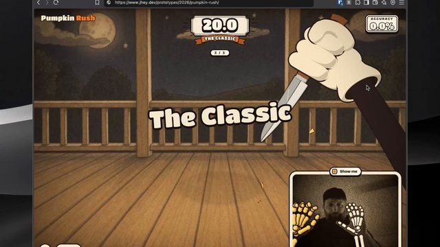
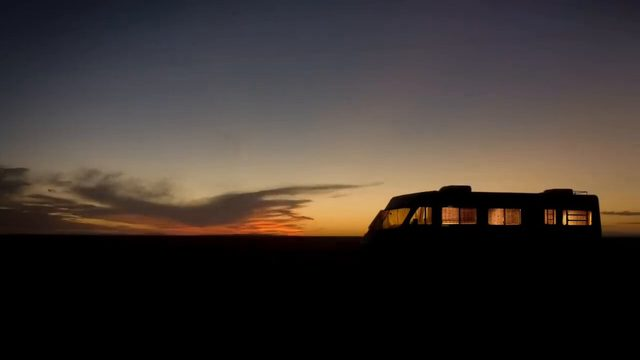

点封面在页面里播放（Vimeo / YouTube / X 需要代理；Vimeo 若没自动开始，再点一下播放键）。觉得好就点「喜欢」，有想法就写在下面的框里保存，我每天出日报前会读，存进偏好和审美库；会多找同类，但每天仍保持类型分散。
目录 01 OT Magnet 1.028 上新动效（Knock knock）02 用摄像头雕南瓜的网页小游戏03 Crown Royal「Always Been Here」04 The Flattest Surface in the World05 The Phone Number puzzle06 Why Are Zombies Green?07 How I Survived Late-Stage Cancer (A Fun Story)08 假如《绝命毒师》换一个片头（学生作业）09 What if you try to sandwich a cube between two portals?10 Sisowath Quay（动画短片）－ 看完剔除（5 条）拆 细拆：Oz Type 色块字体动效
01 字体版式 MG
OT Magnet 1.028 上新动效（Knock knock）
Oz Type（用 Cavalry 做） · X 10-31 【看过视频】（完整看过）
X ↗ 42 秒全片已下载并完整看过
好在哪 近黑的深灰底上，红、粉、黄、蓝、绿、灰六个色块像对话一样一块接一块叠出来：「Knock knock.」「Who's there?」「Magnet.」「Version 1.028」，最下面绿块里的词轮流换成 SQUINT、GAZE、Elbow、Liquid、Dozen、Revamp可借 讲「版本更新」「新功能」这类内容时可以照搬：每句话一个色块，按对话顺序叠上去，最后一块不停换词。细拆见文末
展开全文
02 代码动画 UI动效
用摄像头雕南瓜的网页小游戏
jhey（jh3yy） · X 11-01 【看过画面（抽帧）】

X ↗ 21 秒全片已下载，抽帧看过
好在哪 浏览器里一个卡通南瓜，戴白手套的手拿刀跟着摄像头里的真人手势刻花纹，右下角是摄像头小窗。刻歪了会弹出红色大字「YEOWCH!」，最后给三个南瓜打分，写着「14.5% KNIFE GOBLIN」可借 反馈字可以学：出错时一个歪着的大字带描边砸出来，比弹窗提示更有喜感。讲 AI 识别手势、摄像头交互时，小窗加卡通画面的分屏也很好懂
展开全文
03 3D质感 转场
Crown Royal「Always Been Here」
Henry Scholfield × SAGA（CG） · Vimeo / Stash 11-01 【看过画面（抽帧）】
Vimeo
30 秒全片已下载，抽帧看过
好在哪 30 秒全 CG 广告：镜头一路穿过不同年代的客厅、酒吧、球迷房间，画面里有「1958」这样的年份，紫色酒瓶一直在某个角落。中间一段镜头高速冲过走廊，拖出光带，最后停在现代客厅，打出「PROUDLY DISTILLED IN CANADA SINCE 1939」可借 讲「一项技术的几十年历史」可以学这个：不切镜头，镜头一直往前走，每个房间就是一个年代，同一个主角物件一直在画面里
展开全文
04 知识讲解 3D质感
The Flattest Surface in the World
Branch Education · YouTube 10-16 【看过画面（抽帧）】
57 秒全片已下载，抽帧看过
好在哪 57 秒竖屏讲芯片光刻机里那面最平的镜子：灰白色的机器 3D 剖面，里面一束紫色的光来回折射。讲有多平时，数字「0.0000000002 Meter」配一颗玻璃球，再拿地球和一颗同样大小的光滑球比可借 讲「小到看不见」的数字，先给一个精确到很多位的数字，再立刻换成一个能想象的比较（放大到地球那么大），两步走
展开全文
05 代码动画 数据可视化
The Phone Number puzzle
3Blue1Brown · YouTube 09-25（超过 30 天） 【看过画面（抽帧）】
44 秒全片已下载，抽帧看过
好在哪 纯黑底上只有等宽数字：青色是原数字，黄色是乘出来的结果，一行行竖式乘法像程序在跑。镜头会拉远，几十行算式一下子缩小成一列，再推到某一行看结果可借 讲「算了很多次」的过程，不用每步都讲：先让一行算式慢慢出来，再把镜头拉远，看到几十行在同时算，规模感一下就有了
展开全文
06 剪辑节奏 3D质感
Why Are Zombies Green?
Cleo Abram · YouTube 10-29 【看过画面（抽帧）】
79 秒全片已下载，抽帧看过
好在哪 79 秒竖屏，一个涂成绿色的真人演僵尸，在砖墙前一步步摆动作；每讲一个原因，上方就加一条荧光绿编号字（「1. NO OXYGEN TO CELLS」「2. CIRCULATION STOPS」），中间插 3D 血管、细胞镜头。开头结尾都是同一块墓碑，可以循环可借 列原因时可以让编号字幕一条条累加在画面顶部，不清掉前一条，观众随时知道讲到第几点
展开全文
07 MG 知识讲解
How I Survived Late-Stage Cancer (A Fun Story)
Kurzgesagt · YouTube 10-27 【看过画面（抽帧）】
全片 14 分 54 秒，只下载、看了前 2 分钟
好在哪 Kurzgesagt 创始人讲自己 2018 年得癌症的经历。人物轮廓上标三个点，连到一张「Stage I 到 III」的分级表；化疗药「Cisplatin 2 L」的输液袋在暗处发绿光。结尾一个人身上长出发光的绿色网格可借 讲严肃话题时，扁平插画加一种发光色就够了：只让关键物件（药、病灶）发光，其他都压暗，观众会一直盯着它
展开全文
08 片头片尾 字体版式
假如《绝命毒师》换一个片头（学生作业）
Marcio Alexandre（BTK 大学作业，Breezy 转发） · X 10-28 【看过画面（抽帧）】

X ↗ 76 秒全片已下载，抽帧看过；是同人作业，不是官方片头
好在哪 用剧里的实拍镜头重剪的片头：演员名字里的一两个字母放进绿色的元素周期表方块，比如「Bob Odenkirk」里的「B」「Ir」。中间插一张写满化学式的纸，最后落到原版的「Breaking Bad」标题和「Created by Vince Gilligan」可借 名字和标题里挑一两个字母做成小方块，是很省事的系列化办法；做 AI 科普片头，可以把关键词里的「AI」两个字母框起来
展开全文
09 知识讲解 转场
What if you try to sandwich a cube between two portals?
minutephysics · YouTube 10-10 【看过画面（抽帧）】
60 秒全片已下载，抽帧看过
好在哪 白纸上马克笔画两个传送门，一个橙一个蓝，中间一个小方块。写着「Option #1」「Option #2」两种猜想，每种都用箭头和简单动画演一遍，全片就黑、橙、蓝三种笔可借 讲「两种可能」时，用同一张图分别演两遍，只改一个地方，比左右分屏对比更清楚；手绘风在 Remotion 里用 SVG 描边加抖一点的线条就能做
展开全文
10 MG 字体版式
Sisowath Quay（动画短片）
Leroy Lansaque · Vimeo 精选 10-29 【看过画面（抽帧）】
全片 15 分 33 秒，只下载、看了前 2 分钟
好在哪 金边河边市场的故事：平涂的 2D 人物直接放在颜色调得很浓的实拍照片背景上，粉色挂肉、黄色货架、青绿墙面都很饱和。开头是高棉文加法文的大标题「QUAI SISOWATH」可借 2D 角色叠在实拍照片上，是做「真实场景 + 讲解角色」的省力方法：背景用照片，只把人物和要讲的东西画出来
展开全文
看完剔除（5 条） PolyMatter · 2023 年旧片，主要是素材和网页截图拼接
今日细拆 · 第 1 条
42 秒，6 个色块讲完一款字体 【看过视频】（完整看过，按每秒画面拆；没有声音信息，零点几秒的缓动看不出来） 42 秒全片完整看过。字体厂 Oz Type 用 Cavalry（一款做动效的软件）给新字体 OT Magnet 1.028 做的上新短片：前 12 秒搭好一套色块版式，后 30 秒版式不动，只让字自己变粗变细、换词。镜头全程不动
结构：前 12 秒搭积木，后 30 秒让字呼吸 0:00 红色对话框「Knock knock.」先在左上角，左下带一个小尖角，像聊天气泡 0:02 粉块「Who's there?」出现在右下方，0:04 黄块「Magnet.」，0:06 蓝块「Version 1.028」，每 2 秒加一块，斜着往右下叠 0:03 和 0:07–0:08 字形悄悄换：红块里的 K、n 换成另一种写法，蓝块里的 1、2、8 换成带圆圈的数字。不加任何特效，只换字 0:08 绿块出现，写着 SQUINT；0:10 灰块「Available now →」（斜体）补在左下 0:12 所有字一下变成最粗最宽，底部出现一行小字说明字体参数，右下角 OZ TYPE 标志，版式到这里搭完 0:12–0:41 所有字一起慢慢变粗变宽、再变细变窄，一来回大约 12 秒；绿块里的词每 5 到 6 秒硬切一次：GAZE、Elbow、Liquid、Dozen、Revamp 0:41 停在最细的状态和「Revamp」上，没有回到开头，不是循环 版式 6 个色块像砌墙一样咬合在一起：粉块切掉右下角，黄块切掉左下角，蓝块底部是一个往下的箭头尖，灰块切掉右上角。切角正好让出位置给下一块 颜色是暖红、泡泡糖粉、暖黄、天蓝、亮绿、浅灰，放在近黑的深灰底上；每块一种颜色，块里只有黑字 字体就是 OT Magnet 本身，一种几何感的无衬线字，有可调粗细和宽度 节奏 前 12 秒是「加东西」：每 2 秒一块，节拍很稳 后 30 秒是「不加东西」：靠粗细的慢呼吸（12 秒一轮）加换词的快节拍（5 到 6 秒一次）两条线错开，画面一直在动但不乱 零点几秒的进场方式（滑入还是弹出）只按每秒画面看不出来，这里不瞎写 Mika 可以怎么用 Remotion 做（这部分是做法建议，不是原片用的工具） 色块：每块用一个 div 加 clip-path: polygon(...) 切角，按 60 帧（30fps 下 2 秒）的间隔放进 <Sequence>，进场用 spring() 呼吸：选一款有 wght 和 wdth 轴的可变字体，用 fontVariationSettings 把粗细写成 Math.sin(frame / (12*fps) * 2 * Math.PI) 映射出来的数值，所有块共用同一个值 换词：准备一个词数组，words[Math.floor(frame / (5.5*fps)) % words.length] 直接硬切，不要淡入淡出 换字形：字体有 stylistic alternates 的话，用 fontFeatureSettings: "'ss01' 1" 在某几帧打开，做出字自己闪一下的感觉 放到 AI 科普里怎么用 很适合做「模型更新」的开场或结尾卡：「有新模型？」「谁？」「XX 4.0」「这次升级了：」，最后一个色块轮流换成几个新能力的关键词
颜色可以锁成鱼知道自己的几种色，色块形状固定下来，就成了系列的固定版式
看原帖 ↗
信源：Vimeo、Stash、YouTube、X。全程只读浏览，没有点赞、关注、评论或转发。
 X ↗
X ↗